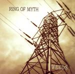

| Artist: | Ring Of Myth |
| Title: | Weeds |
| Label: | Unicorn Digital Inc. UNCR-5022 |
| Length(s): | 64 minutes |
| Year(s) of release: | 2005 |
| Month of review: | [01/2006] |
| 1) | Offering | 8.13 |
| 2) | Into Phase | 9.57 |
| 3) | Plight | 1.23 |
| 4) | Drone | 5.02 |
| 5) | Blue Stem | 11.57 |
| 6) | For A Time | 2.09 |
| 7) | Soft Disguise | 8.19 |
| 8) | Drowning In Fire | 6.04 |
| 9) | Bird's Eye View | 3.45 |
| 10) | Half Wing | 7.37 |
With the opening Into Phase we open in Genesis style, but soon we move into more Yes like territories because of the vocal melodies and the very Squire like bass playing. Indeed, the song reminds me very much of Time And A Word era Yes. The instrumental sections, such as the organ with guitar in the middle are stronger than Yes plays it, and very driven too. The song winds down at the end, giving us a short breather.
After the short and repetitive instrumental Plight, which is able to give a solo spot to each of the musicians at the same time, we come to another vocal and Yes-inspired song, Drone. The harmony vocals seem a bit far away, as if they were afraid to lay it too much on top of the music. Now it has to vie for attention with the instrumental side of things making for a very optimistic, uplifting, but also very tiring affair. Strange are the singalong vocals in this passage. It is as if somebody in the studio was mumbling along and recorded accidentally. The guitar work is sharp and rough.
Blue Stem, the only song passing the ten minute mark, opens in instrumental progrock trio style. Not much melody, but mainly a lot of varied playing with signature changes the rule instead of the exception. This is a side of the band that seems hard to reconcile with the Yes like songs. Still, the style of the band continues to meander between hard edged instrumental rock (their Rush influence) and Yes. I am not so fond of the vocals myself, they share part of their sound with Jon Anderson, but they are less clear and ehm screamier. The band is also more groovy/funky than Yes, but that's okay. The finale of this song is quite a difference again, including fast guitarwork in the vein of Muse no less.
For A Time is an echoey restful piece, with Flores sounding far away. After this short Christmas like song, we come to Soft Disguise. Compared to the earlier pieces this is also relatively relaxed with friendly jangling acoustic guitars and soft vocal harmonies. The space does go up in places, the vocals have a strong whine here. As a composition, the song is very fragmented with loose flying pieces of Genesis and Yes flying around alternated with occasional heavy outbursts. The second half of the song has the angular guitar of King Crimson, and a good vocal melody. One of the problems with this band is that the melodies lack sufficient colour. The vocal melody also lends a sense of urgency which together with the pace of it all makes this a highpoint thus far. We end in plodding style. There are elements of the Beatles' I Want You here.
Drowning In Fire opens sparingly with bells chiming, and we go into meandermode. Don't get me wrong: I like the band more in this style, then in the Yes-copy mode. The melody in the middle is quite subtle as vocals come back in (but very much low key). A hectic, sometimes somewhat scary tune.
Bird's Eye View continues the hecticness, and is even somewhat aggressive. The vocals are also more daring here and varied, and less in the Anderson vein. The choruses are somewhat Britpoppish at times, while the music has quite a bit more edge. The ending is somewhat disappointing.
Half Wing brings in tension again, beneath the skin. The guitar sound owes to King Crimson and the melodies are of the building up kind, a bit in the vein of Anekdoten, but without the mellotron. Strong stuff.